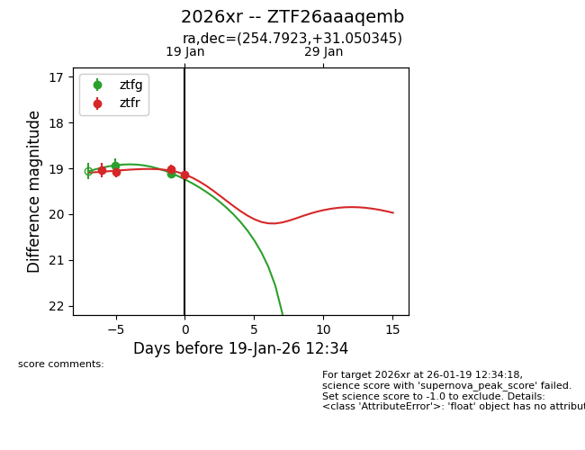
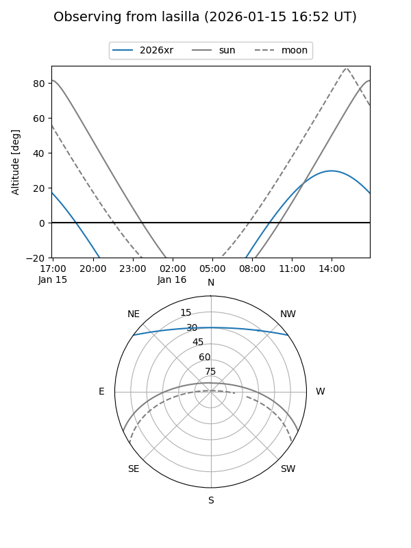
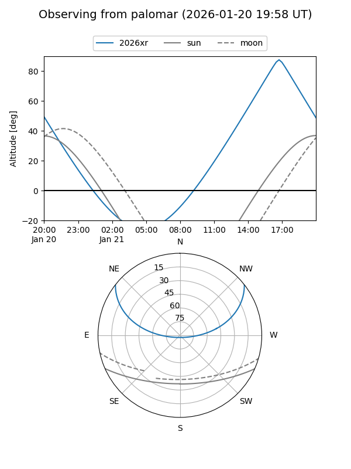
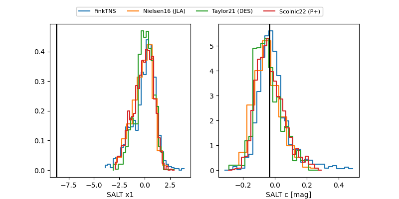

2026xr
Target 2026xr at 2026-01-18 13:55
Aliases and brokers:
FINK: link
Lasair: link
ALeRCE: link
TNS: link
YSE: link
alt names
ZTF26aaaqemb (ztf,fink_ztf)
2026xr (tns,yse)
Coordinates:
equatorial (ra, dec) = 254.7923,+31.05034
equatorial (HMS+DMS) = 16:59:10.15,+31:03:01.24
galactic (l, b) = (52.9385,+36.43693)
Flags:
Photometry:
last ztfg=19.11, ztfr=19.03
2 ztfg, 3 ztfr detections
Lightcurve

Visibility


Additional plots
